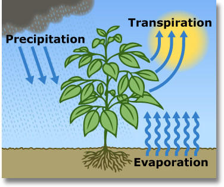

Long-term Drought Visualizer
Welcome to the Long-term Drought Visualizer! An application to explore site-specific climate and drought patterns in the 20th and 21st century.
About
This tool is designed for resource managers who are interested in exploring long-term historical and future patterns of soil moisture and plant available water for their specific site. Historical simulations illustrate long-term, site-specific perspectives on drought variability and provide context on a site’s natural range of variability. Future projections of 21st century drought help quantify expected deviations from historical variability that represent potential risk of novel drought exposure. Here, users can utilize the Long-term Drought Simulator by specifying a focal location and users have the option to provide additional site-specific information, including soil texture, and vegetation composition. Historical and future climate data are compiled for the focal location, and climate, soil and vegetation information are integrated into a process-based, ecosystem water- balance model that estimates water fluxes and soil water content at a daily time step. The tool provides interactive, site-specific figures where seasonal and annual patterns of water availability for both the past and the future, under different models of climate change, can be explored and downloaded.
How to
This tool is designed to simulate site-specific results dynamically. Users must select a location to simulate and specify if they would like results for historical conditions only, or historical and future. Additionally, users have the option of specifying soil texture and vegetation composition for their site or utilizing gridded soils and vegetation conditions that are estimated from mean climate conditions.
Enter information in the Simulation Inputs box to the right. More information about each input is listed in the dropdowns below. Once your inputs are ready select the Validate button. Inputs will be verified for simulation compatibility. If results are valid, the Simulate button will appear. Click the Simulate button once to begin simulation and watch the status of your project progress below.
Location
Location is designated as coordinates (lat, long) in the WGS84 coordinate reference system.
Select your location by either clicking on the map or by entering coordinates into the latitude and
longitude boxes provided.
Historical and Future Simulations
Users have the option of selecting to simulate long-term historical (1979 – 2019) patterns of
water availability alone or to simulate both historical and future (2020 – 2099) water availability.
Future simulations occur for 7 different general circulation models (GCMs), that are believed to
best predict future climate in the American West.
All weather data in this app is provided by the
Climatology Lab at the University of California Merced.
Selecting Historical & Future to simulate future simulations increases simulation time
from approximately 1 minute to potentially 5 minutes.
Soils Texture
Soil texture influences the availability of a site to retain moisture in the soil profile. Here soil
texture is described as percent sand, silt, and clay, where these must sum to 100%.
If you know your site’s texture or soil type select choose. This will give you the option to
enter specific texture values in the input boxes provide.
Otherwise, select obtain. Selecting obtain will grab soil texture values for the latitude and
longitude provided from gridded soils data
(SSURGO).
Vegetation Composition
Vegetation composition and structure influences how much moisture reaches the soil profile (via interception) and
how soil moisture is utilized (via transpiration). Here vegetation composition is defined as the
composition of 4 plant functional types (trees, shrubs, grasses, forbs) and as bare-ground. One
or all 5 types can exist on a site, but they must sum to 1. Other information about the vegetation
structure (mean monthly biomass, litter, and phenology) is generated by the model based upon site-specific climate
(detailed description in Bradford et al. 2014).
If you know your site’s vegetation composition select choose. This will give you the option to enter
vegetation composition values, summing to 1. Other vegetation structure values will be calculated by the model.
Otherwise, select generate. Selecting generate tells the model to simulate vegetation
composition, as well as structure, based on site-specific climate.
Note: Click on the above text to expand or collapse 'how to' tips.
Status
Simulation Inputs
Location
Historical and Future Simulations
Soil Texture
Vegetation Composition
More Information
About the model
The results presented here are generated with SOILWAT2 (Schlaepfer and Andrews 2018, Schlaepfer and Murphy 2018), which is a daily, site-specific, multi soil-layer, ecosystem water-balance model, driven by daily meteorology, as well as site soil texture, soil depth, and vegetation.Daily meteorology includes historical weather data from gridMET. gridMET is a dataset of daily high-spatial resolution (~4-km, 1/24th degree) surface meteorological data covering the contiguous US from 1979-yesterday. Daily future weather data is downloaded from the MACA v2 daily dataset. Multivariate Adaptive Constructed Analogs (MACA) is a statistical method for downscaling Global Climate Models (GCMs) from their native coarse resolution to a higher spatial resolution that reflects observed patterns of daily near-surface meteorology and simulated changes in GCMs experiments. gridMET is used as the native coarse resolution for this MACA dataset.
The tool shows projections for seven GCMs and two possible climate futures, one in which emissions peak around 2040 and then decline (RCP 4.5) and another in which emissions continue to rise throughout the 21st century (RCP 8.5). Both futures are considered possible depending on hypothetical trajectories of greenhouse gases.
Guidance on using results
The results generated and presented here provide a long-term historical and future perspective on soil moisture and climate at a specific site. The resulting site-specific projections of moisture availability is intended to allow users to recognize novel drought risk and to develop hypotheses about how plant species and ecosystems will respond to changing soil water conditions. Projections are based on GCMs that were were selected from all models that participated in the fifth phase of the Climate Model Intercomparison Project (Taylor et al. 2011; CMIP5) to include both the most independent (Knutti et al. 2013) and best performing subset (for the western United States; Rupp et al. 2013) of GCMs. While users can explore projected climate and soil moisture conditions from individual climate models, ensembles are also presented to represent the mean consensus amongst models.Data Sources

Gridded Historical and Future Meteorological Data
University of Califonia, Merced
-
All weather data in this app was provided by the Climatology Lab at the University of California Merced. gridMET data was used for historical simulations (1979-yesterday) and the MACA v2 daily dataset was used for all future climate data. Seven GCMs (HadGEM2-CC, bcc-csm1-1, CNRM-CM5, MIROC5, IPSL-CM5A-MR, CSIRO-Mk3-6-0, & MIROC-ESM) and two RCPS (4.5 and 8.5) are currently simulated with the app.
Gridded Soil Survey Geographic Database (gSSURGO)
Natural Resources Conservation Service, United States Department of Agriculture
-
Gridded SSURGO soil data is utilized to inform the soil moisture model when soil properties information is not provided by the user. If SSURGO data is not available for a specific site, STATSGO is used instead.

SOILWAT2 - An Ecohydrological Water-balance Model
Southwest Biological Science Center, USGS, Flagstaff, AZ
-
SOILWAT2, is a daily, site-specific, multi soil layer, water-balance model, used to generate soil moisture results.
Relevant Links
References
Methods
- Knutti, R., D. Masson, and A. Gettelman. 2013. Climate model genealogy: Generation CMIP5 and how we got there. Geophysical Research Letters 40:1194-1199.
- Rupp, D. E., J. T. Abatzoglou, K. C. Hegewisch, and P. W. Mote. 2013. Evaluation of CMIP5 20th century climate simulations for the Pacific Northwest USA. Journal of Geophysical Research: Atmospheres 118:10884-10906.
- Schlaepfer, D. R., and R. Murphy. 2018. rSOILWAT2: An Ecohydrological Ecosystem-Scale Water Balance Simulation Model. R package version 2.3.2. https://github.com/DrylandEcology/rSOILWAT2
- Taylor, K. E., R. J. Stouffer, and G. A. Meehl. 2011. An Overview of CMIP5 and the Experiment Design. Bulletin of the American Meteorological Society 93:485-498.
SOILWAT2 Publications
- Bradford, J. B., D. R. Schlaepfer, W. K. Lauenroth, and I. C. Burke. 2014. Shifts in plant functional types have time-dependent and regionally variable impacts on dryland ecosystem water balance. Journal of Ecology 102:1408-1418.
- Bradford, J. B., D. R. Schlaepfer, W. K. Lauenroth, C. B. Yackulic, M. Duniway, S. Hall, G. Jia, K. Jamiyansharav, S. M. Munson, S. D. Wilson, and B. Tietjen. 2017. Future soil moisture and temperature extremes imply expanding suitability for rainfed agriculture in temperate drylands. Scientific Reports 7:12923.
- Bradford, J. B., D. R. Schlaepfer, W. K. Lauenroth, K.A. Palmquist. 2020. Robust ecological drought projections for drylands in the 21st century. Global Change Biology 26: 3906-3919.
- Lauenroth, W. K., D. R. Schlaepfer, and J. B. Bradford. 2014. Ecohydrology of Dry Regions: Storage versus Pulse Soil Water Dynamics. Ecosystems 17:1469-1479.
- Palmquist, K. A., D. R. Schlaepfer, J. B. Bradford, and W. K. Lauenroth. 2016. Mid-latitude shrub steppe plant communities: climate change consequences for soil water resources. Ecology 97:2342-2354.
- Schlaepfer, D. R., W. K. Lauenroth, and J. B. Bradford. 2012. Ecohydrological niche of sagebrush ecosystems. Ecohydrology 5:453-466.
- Schlaepfer, D. R., K. A. Taylor, V. E. Pennington, K. N. Nelson, T. E. Martyn, C. M. Rottler, W. K. Lauenroth, and J. B. Bradford. 2015. Simulated big sagebrush regeneration supports predicted changes at the trailing and leading edges of distribution shifts. Ecosphere 6:1-31.
- Schlaepfer, D. R., J. B. Bradford, W. K. Lauenroth, S. M. Munson, B. Tietjen, S. A. Hall, S. D. Wilson, M. C. Duniway, G. Jia, D. A. Pyke, A. Lkhagva, and K. Jamiyansharav. 2017. Climate change reduces extent of temperate drylands and intensifies drought in deep soils. Nature Communications 8:14196.
- Tietjen, B., D. R. Schlaepfer, J. B. Bradford, W. K. Lauenroth, S. A. Hall, M. C. Duniway, T. Hochstrasser, G. Jia, S. M. Munson, D. A. Pyke, and S. D. Wilson. 2017. Climate change-induced vegetation shifts lead to more ecological droughts despite projected rainfall increases in many global temperate drylands. Global Change Biology 23:2743-2754.